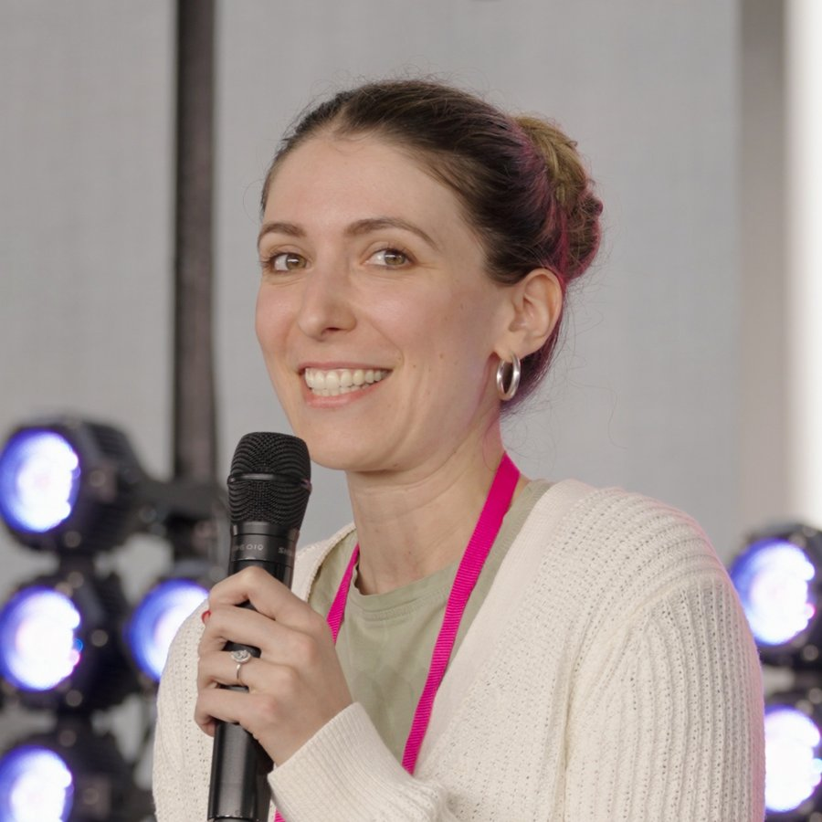
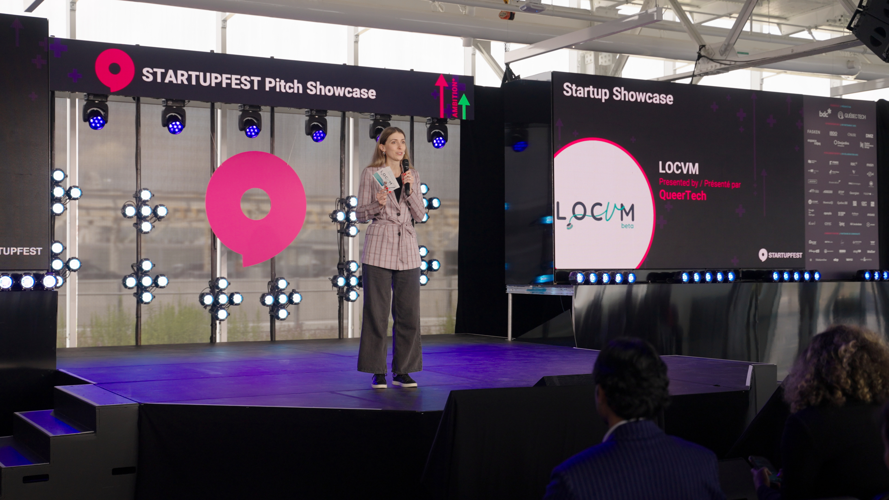
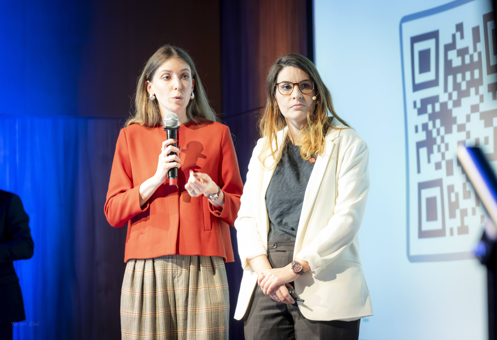
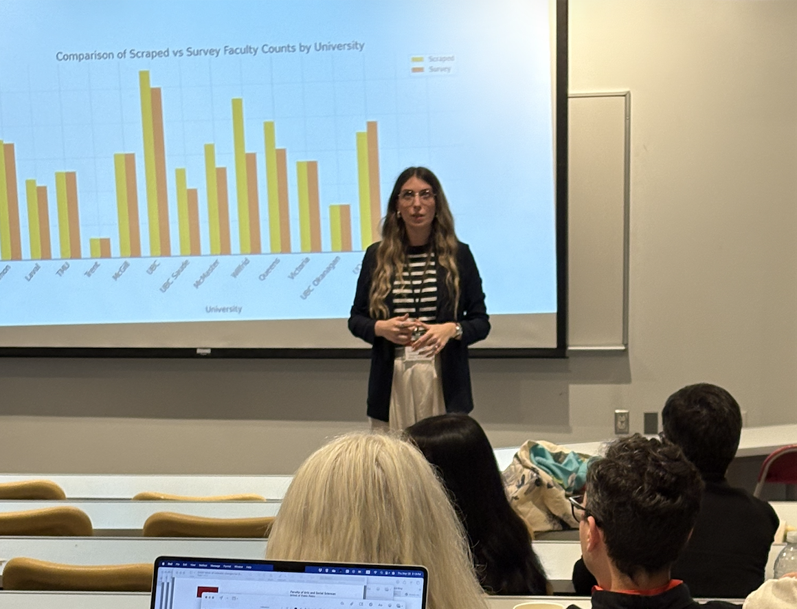

The operating system of a career

My career is a case study in the changing nature of work.
Angélique J. Bernabé, Ph.D.
I've always been interested in the spaces between people and opportunity.
As a labour economist, I study how labour markets function, how careers evolve, and how institutions respond when people's expectations of work change. My work spans retirement, workforce mobility, physician labour markets, and the future of work, but the underlying question is always the same: how can we design systems that make it easier for people to do meaningful work?
That question led me to co-found LOCVM, a platform helping physicians and healthcare organizations connect across Canada. It also shapes my research, teaching, governance, and entrepreneurial work, where I explore how flexibility, mobility, and technology are transforming the relationship between people and work.
My career is a case study in the changing nature of work. Through research, convening, governance, and building, I explore how ideas move from evidence to action—and how institutions can evolve to better connect people with opportunity.
How healthcare workforce systems fail at matching, and what better-designed institutions could look like.
How technology, flexibility, and shifting expectations are restructuring the employment relationship.
The barriers and bridges that shape whether people can move toward better opportunities.
How people exit, re-enter, and navigate the later stages of working life, and what institutions could do better.
I teach economics at Toronto Metropolitan University, where my courses connect economic theory to the realities students will face in their own careers: how labour markets work, how people make decisions about work and life, and how institutions shape the choices available to them.
My approach is grounded in applied economics. Rather than treating theory as an end in itself, I use it as a lens for understanding real institutions, real markets, and the trade-offs people navigate every day.
Contributing an economist's perspective to institutional strategy, accountability, and decision-making at one of Canada's largest universities.
Good governance is, at its core, a coordination problem: aligning incentives, information, and accountability so institutions can adapt as conditions change.
I speak on labour markets, the future of work, and what it takes to close the gap between how work is organized and how people actually live. My talks are grounded in research and designed to move a room.



LOCVM is where my research meets practice. After years of studying how labour markets fail, I co-founded a platform to do something about one of the most visible failures I kept encountering: physicians and healthcare organizations across Canada struggling to find each other.
Canada's staffing crisis isn't only a shortage. It's a matching problem, and matching problems can be solved.
LOCVM connects physicians and healthcare organizations across Canada. It is not a staffing agency. It is the infrastructure for a market that didn't have any.
I welcome speaking invitations, research collaboration, and media inquiries. If you are organizing a conference, convening a panel, or working on a question at the intersection of labour markets and institutional design, I'd like to hear from you.